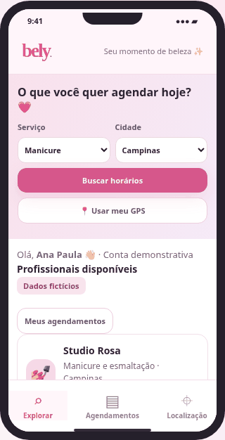
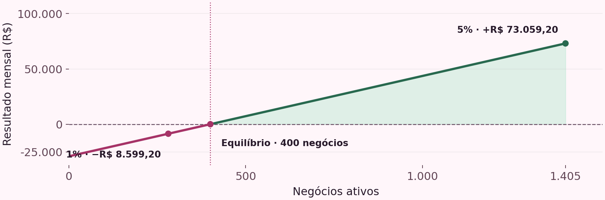

Abertura
Sua beleza,
no seu tempo.
O Bely conecta quem quer agendar um serviço de beleza a quem tem horário para atender.
Abertura
O Bely conecta quem quer agendar um serviço de beleza a quem tem horário para atender.

Problema e solução
Para a cliente, mensagens e espera. Para o salão, horários vagos.
Encontre salões perto de onde estiver. Confira serviços e horários, com avaliações previstas.
Divulgue seus serviços, gerencie a agenda e receba reservas para preencher horários vagos.
Demonstração do MVP
Acompanhe a mesma reserva nas telas da cliente e do salão.

Mercado e crescimento
Alavanca do Bely: gerar mais reservas concluídas por salão ativo.
Região de Campinas · recorte de 22 municípios.
Limeira · estimativa de referência.
Modelo de negócio
R$ 29.000/mês em custos fixos. Equilíbrio estimado em 400 negócios ativos.
10% por reserva concluída, sem mensalidade.
R$ 100/mês + 5% por reserva concluída, com destaque patrocinado.
Estrutura de custos
Além dos fixos, R$ 1,20 por reserva e provisão de 8% sobre a receita do Bely.
| Despesa fixa | Por mês | Por ano |
|---|---|---|
| Equipe de desenvolvimento | R$ 18.000 | R$ 216.000 |
| Anúncios e aquisição | R$ 6.000 | R$ 72.000 |
| Infraestrutura e hospedagem | R$ 1.500 | R$ 18.000 |
| Atendimento e operações | R$ 3.000 | R$ 36.000 |
| Contabilidade | R$ 500 | R$ 6.000 |
| Total fixo | R$ 29.000 | R$ 348.000 |
Projeções financeiras
Na simulação com impostos, a partir de 400 negócios ativos · cerca de 1,42% de adesão.

Plano de expansão
Quatro fases em 12 meses. A expansão depende dos resultados do piloto.
Métricas de acompanhamento
Indicador principal: reservas concluídas por salão ativo, a cada mês.
Salões ativos, conversão de busca em reserva, cancelamentos e retenção mensal.
Custo de aquisição (CAC), receita recorrente (MRR) e margem por salão ativo.
Proposta de captação
Rodada coletiva em etapas, com aporte inicial de R$ 150 mil.
| Composição da rodada | Aporte por investidor | Participação por investidor | Participação total |
|---|---|---|---|
| 3 investidores | R$ 150.000 | 5% | 15% |
| 5 investidores | R$ 90.000 | 3% | 15% |
| 9 investidores | R$ 50.000 | aprox. 1,67% | 15% |